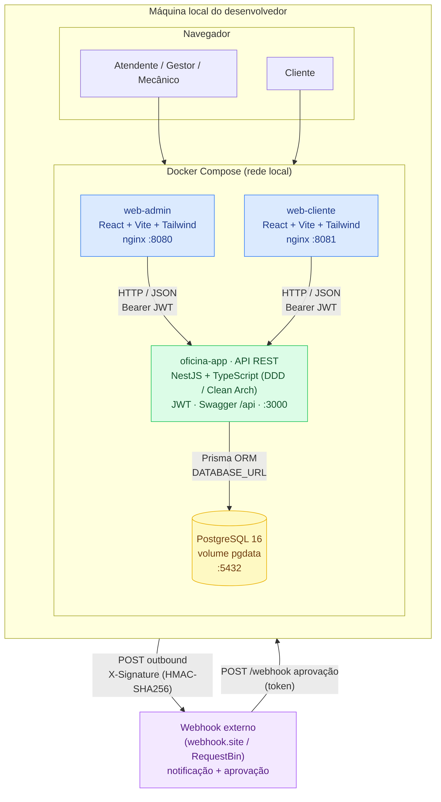
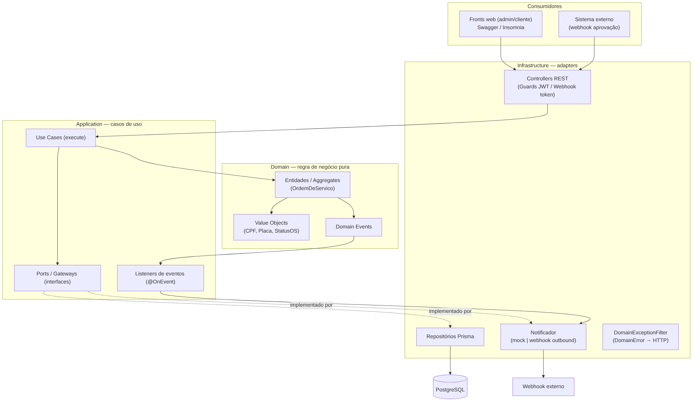
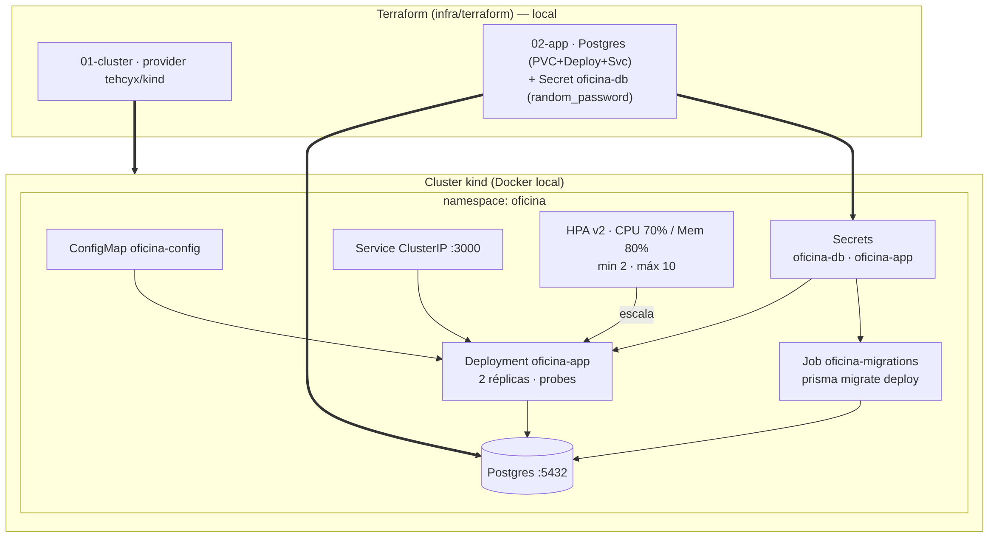

Sistema Integrado de Oficina Mecânica — Documento de Entrega
Execução 100% local — sem provisionamento em nuvem
Repositório: https://github.com/engineercodeprojects/fase02-mecanica
Compartilhamento: repositório compartilhado com o usuário
soat-architecture (colaborador com acesso de leitura).
Link do vídeo:
_____________________________________________________
(YouTube/Vimeo — substituir antes da entrega)
A solução foi desenvolvida e executada 100% localmente. Os componentes
rodam como containers na máquina do desenvolvedor, orquestrados por Docker
Compose (runtime principal) e, opcionalmente, em um cluster Kubernetes
local (kind) provisionado por Terraform. O único ator externo é um
webhook de terceiros usado para demonstrar notificações e aprovação de orçamento.
| Componente | Tecnologia | Porta local | Papel |
|---|---|---|---|
| Front Admin | React 18 + Vite + Tailwind (nginx) | 8080 | Painel para atendente/gestor/mecânico |
| Front Cliente | React 18 + Vite + Tailwind (nginx) | 8081 | Acompanhamento e aprovação pelo cliente |
| API | NestJS + TypeScript (DDD/Clean Architecture) | 3000 | Regras de negócio, REST, JWT, Swagger |
| Banco de dados | PostgreSQL 16 (volume pgdata) | 5432 | Persistência (ACID) via Prisma ORM |
| Orquestração | Docker Compose | — | Sobe os serviços e aplica migrations |
| Orquestração (opcional) | Kubernetes kind + Terraform | — | Deploy local com HPA (autoescala) |
| Integração externa | Webhook HTTP (HMAC-SHA256) | — | Notificação de status + aprovação de orçamento |


